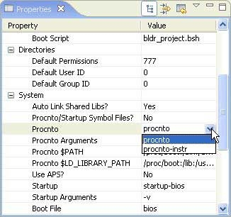

As mentioned earlier, to capture instrumentation data for analysis, the instrumented kernel (procnto*-instr) must be running. This kernel is a drop-in replacement for the standard kernel (though the instrumented kernel is slightly larger). When you're not gathering instrumentation data, the instrumented kernel is almost exactly as fast as the regular kernel.
If procnto*-instr appears in the output, then the OS image is running the instrumented kernel.
To substitute the procnto*-instr module in the OS image on your board, you can either manually edit your buildfile, then run mkifs to generate a new image, or use the System Builder perspective to configure the image's properties.
Replacing the kernel using the System Builder

Assuming you're running the instrumented kernel on your board, you're ready to use the System Profiler. A profiling session usually involves these three steps:
You can gather trace events from the instrumented kernel in two different ways. You can run a command-line utility (e.g. tracelogger) on your target to generate a log file, and then transfer that log file back to your development environment for analysis. Or, you can capture events directly from the IDE using the Log Configuration dialog.
If you gather system-profiling data through qconn in the IDE, you're already accessing the instrumented kernel as root.
Using the command-line server currently offers more flexibility as to when the data is captured, but requires that you set up and configure filters yourself using the TraceEvent() API. The Log Configuration dialog lets you set a variety of different static filters and configure the duration of time that the events are logged for.
For more information on the tracelogger utility, see its entry in the Utilities Reference. For traceevent , see the Neutrino Library Reference.